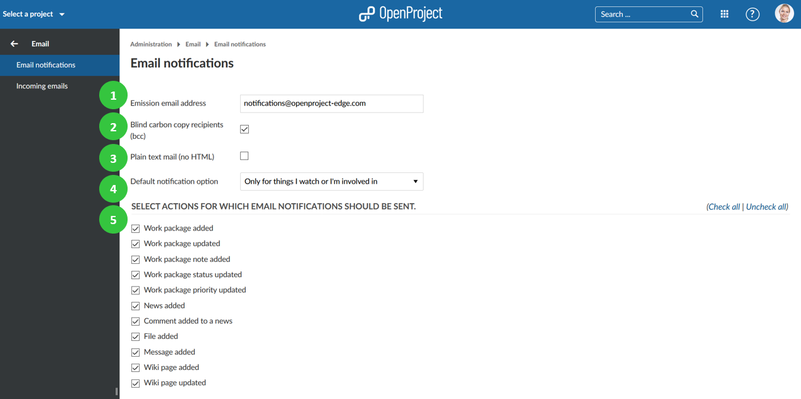
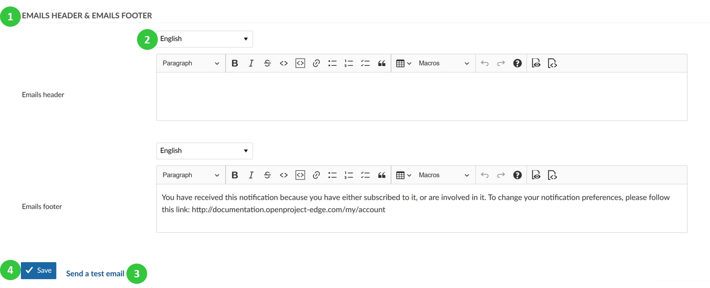
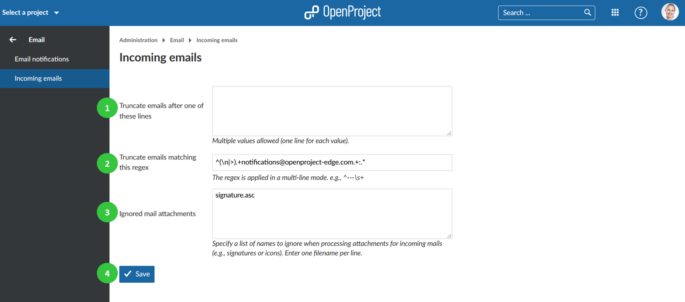

Email settings
Configure email settings in OpenProject, i.e. Email notifications and incoming email configuration.
Navigate to -> Administration -> Emails.
Email notifications settings
To adapt email notification settings, go to Email and choose Email notifications.
- Emission email address. This email Address will be shown as the sender for the email notifications sent by OpenProject (for example, when a work package is changed).
- Activate blind carbon copy recipients (bcc).
- Define if the email should be formatted in plain text (no HTML).
- Select the default notification options. The default notification can be adapted in the user profile.
- Select for which actions email notification should be sent. You have the possibility to check all or uncheck all at the top right.

Configure your notification email header and footer which will be sent out for email notifications from the system.
- Formulate header and/or footer for the email notifications. These are used for all the email notifications from OpenProject (e.g. when creating a work package).
- Choose a language for which the email header and footer will apply.
- Send a test email.
- Do not forget to save your changes.
Incoming emails settings
To adapt incoming email settings, go to Email -> Incoming Email. Here you can configure the following options.
- Define after which lines an email should be truncated. This setting allows shortening email after the entered lines.
- Specify a regular expression to truncate emails.
- Ignore mail attachment of the specified names in this list.
- Do not forget to save the changes.

To set up incoming email, please visit our Operations guide.